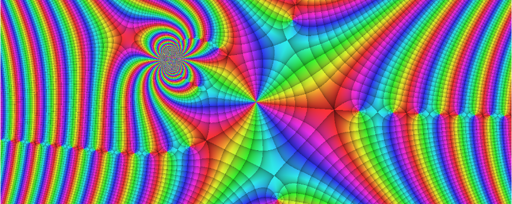

With viscomplexr you can create phase portraits of functions on the complex number plane. While the main purpose of this package are scientific, educational and technical applications, the sheer beauty of phase portraits may be motivation enough to explore the fascinating realm of complex-valued functions. The package is embedded in the framework of R base graphics and allows for print quality graphics files. To a great deal, viscomplexr follows the conventions published by Wegert (2012).
For a detailed step-by-step introduction see the package’s vignette. After installing viscomplexr on your machine, you can view the vignette by calling:
vignette("viscomplexr-vignette")Besides making you acquainted with how to work with the package, the vignette also tells you more about some shenanigans going on behind the scenes; among them parallel processing and viscomplexr’s temporary file system.
Installation
The released version of viscomplexr can be installed from CRAN with:
install.packages("viscomplexr")And the development version from GitHub with:
# install.packages("devtools")
devtools::install_github("PeterBiber/viscomplexr")Example
Let’s plot a phase portrait of the function f(z)=sin(z^3/(z-1i+2)). This function is portrayed in the banner above, and the code below produces exactly that banner. The workhorse function of viscomplexr is called phasePortrait, and besides its specific input variables, it also accepts all parameters that are accepted by R’s plot.default function, like axes, xaxs, and yaxs in the example below. Other often useful ones are main, xlab, and ylab, especially for scientific, technical or educational applications.
# Make a phase portrait of the function
# f(z) = sin(z^3/(z - 1i + 2))
# in the domain [-6, 6] (real), and [-2.4, 2.4] (imaginary)
library(viscomplexr)
# You can open any R graphics device here (bmp, jpeg, png, tiff, pdf,
# windows, x11, ...), see R documentation if you are not familiar with these.
# This example, as it is, plots into the default graphics device.
# reduce plot margin to 0, store previous graphics parameter settings in op
op <- par(mar = c(0, 0, 0, 0))
# call the function phasePortrait
phasePortrait("sin(z^3/(z - 1i + 2))", # define the function
xlim = c(-6, 6), ylim = c(-2.4, 2.4), # define the domain
axes = FALSE, # suppress axes
xaxs = "i", yaxs = "i") # no empty zone around plot
# set graphics parameters to previous values
par(op)
# If you have initially opened a graphics device that plots into a file, you
# must close it here with
# dev.off()While there are many options and a few useful supporting functions (see vignette and documentation), this example shows the core way of plotting phase portraits. It could even be reduced to just the function to be portrayed (here provided as a character string) and the parameters xlim and ylim. The other parameters in the example, and also the omission of the plot margins before calling phasePortrait, were only used in order to obtain a pretty banner for this README.
Acknowledgments
While this package is a leisure project, it would have been a mission impossible without the background of my (P.B.) daily work with R as a Forest Scientist at the Technical University of Munich (TUM). Fortunately, I have a job that allows me to learn about Nature by asking her questions (or trying to simulate what she is doing) with ever-improving methods and tools. I would like to thank everyone at the Chair of Forest Growth and Yield Science at TUM who keep me involved in discussions like: How can this be solved in R …
switch(1 + trunc(runif(1, 0, 6)),
"... at all?",
"... in a quick-and-dirty way?",
"... in Hadley-Wickham-style?",
"... without a loop?",
"... without nested loops?",
"... in a way somebody can understand?")Veronika Biber provided expert advice for improving the vignette. Johannes Biber turned out the most patient pre-release tester one can imagine, boosting things with his high-end gaming machine. Thanks, guys! Also thanks to Gregor Seyer for his helpful review of the CRAN submission.
Clearly, programming in R would not be what it is, weren’t there some R titans who generously share their knowledge online. While I keep learning from all of them, I would like to thank especially Hadley Wickham and Dirk Eddelbüttel.